Case Study
Building Search Visibility for a Product That Didn't Exist Yet
Google Search Console, five months from launch. Captured September 13, 2026.
The situation
HVAC/R AI Pro is an AI diagnostic tool for HVAC and refrigeration technicians. Point a phone at an equipment nameplate, get the unit identified, then work the problem with structured troubleshooting guidance, airflow tools, and estimate support.
When I came in, there was no site. No domain history, no links, no authority, no content. I built the content architecture alongside the founder while the product was still being finished.
The competitive picture was not favorable. Search results for every relevant term were held by two groups: Apple and Google Play app listings, and "best HVAC apps" roundups published by field service software companies with dedicated content teams. Established technician apps like Bluon and measureQuick had years of authority and large installed user bases.
A brand new domain does not usually break into that.
What I built
I developed the page architecture and wrote the content for the site's topical cluster, structured as a hub with supporting pages around each of the product's real workflows:
- Troubleshooting (
/hvac-troubleshooting-app), the primary commercial page - Equipment Scanner (
/equipment-scanner), nameplate capture and equipment identification - Airflow and static pressure (
/hvac-airflow-calculator,/airflow-static-pressure-tools) - Duct sizing (
/duct-sizing-calculator,/duct-sizing-ductulator-app) - Refrigeration (
/refrigeration-tools) - Estimates (
/hvac-estimate-app) - Web dashboard (
/hvac-web-dashboard) - Features overview (
/features)
Each page was mapped to a specific query cluster before it was written, with internal linking designed so the pages reinforce each other instead of competing.
The editorial rule I set was that the pages had to be honest about what the product does not do. The Equipment Scanner page states plainly where nameplate capture fails: faded plates, bad angles, partial reads. Technicians are a skeptical audience who catch overstatement immediately, and pages that acknowledge limits earn more trust than pages that don't.
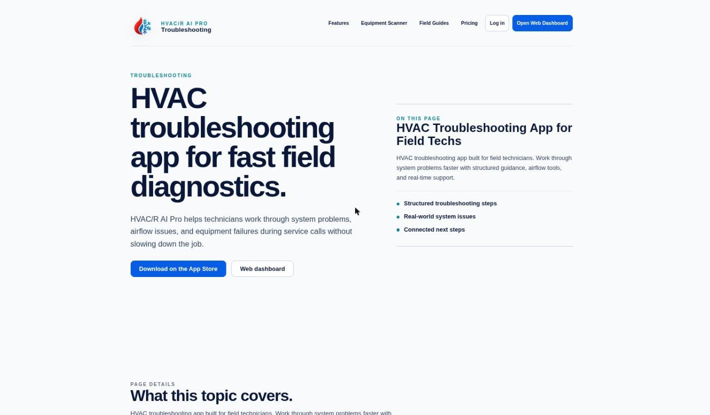
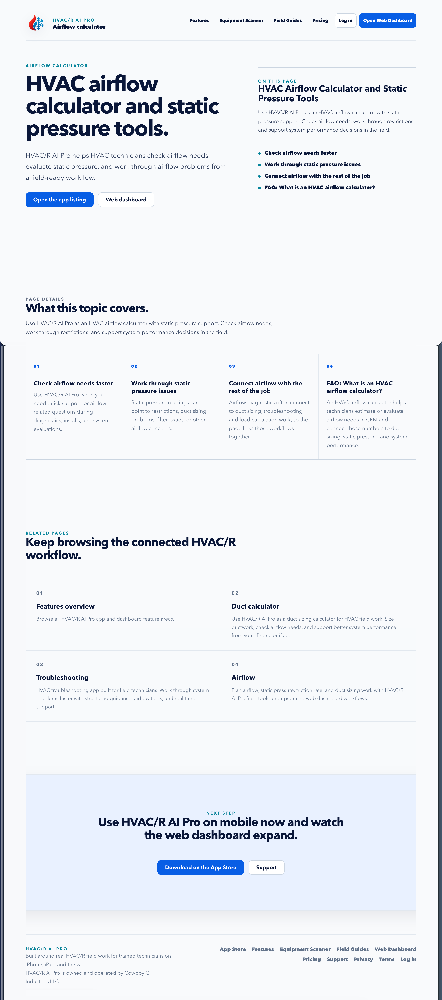
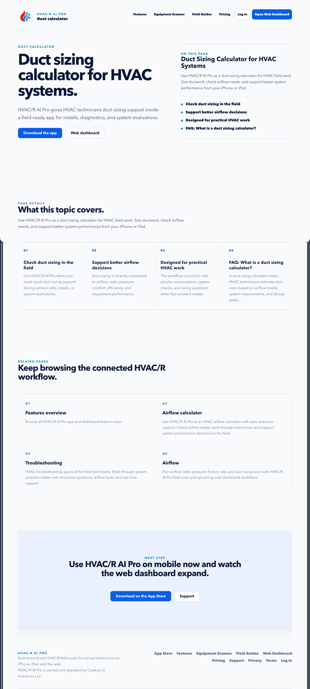
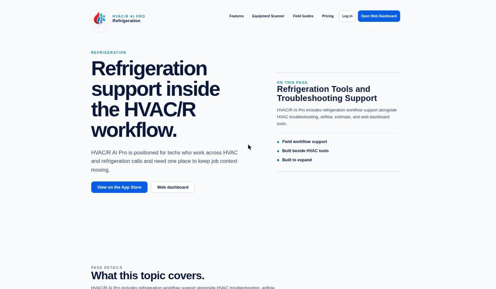
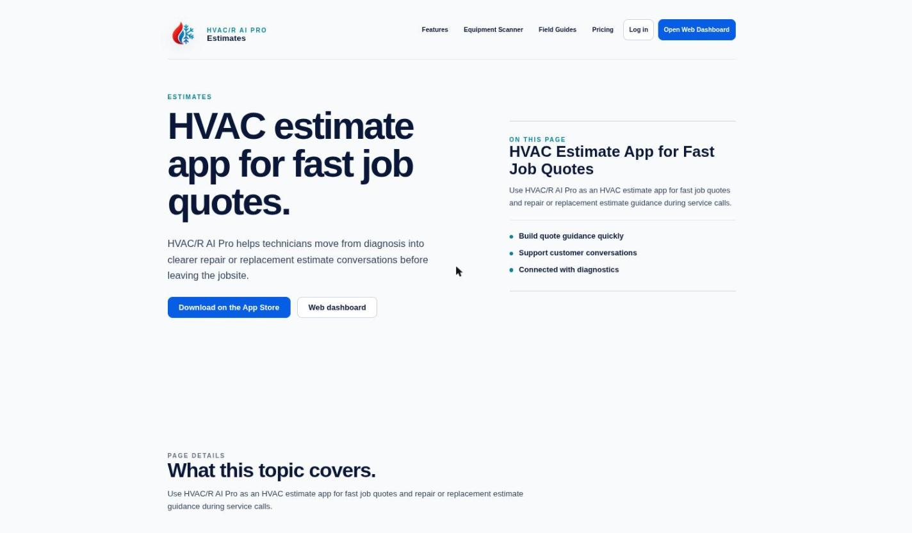
Results
All figures are from the client's Google Search Console property, captured September 13, 2026. Nothing is estimated or drawn from third-party tools.
Five months from launch
| Metric | Value |
|---|---|
| Total impressions | 3,841 |
| Total clicks | 93 |
| Average CTR | 2.4% |
| Queries the site now appears for | 75 |
| First recorded impression | April 25, 2026 |
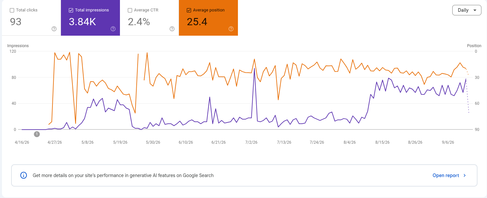
Page-one placement on the head term
/hvac-troubleshooting-app now holds page one for "hvac troubleshooting app." In a signed-out, neutral US search it appears sixth organically, above measureQuick's App Store listing and above ServiceTitan's "14 Best HVAC Apps" roundup.
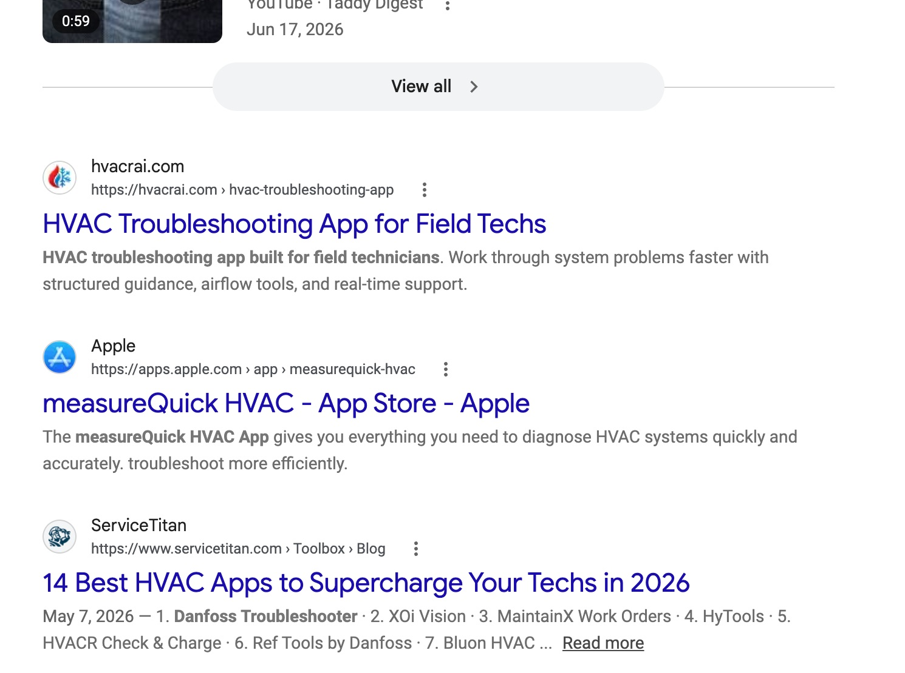
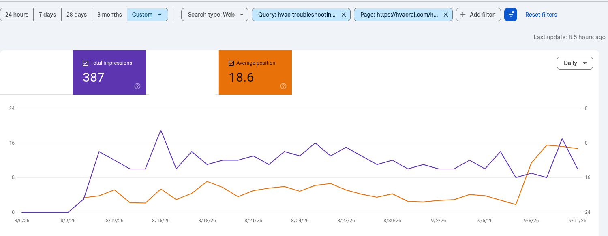
The strongest query on the site
"hvac ai app" holds average position 5.1 with an 8% click-through rate, the best-converting term the site ranks for.
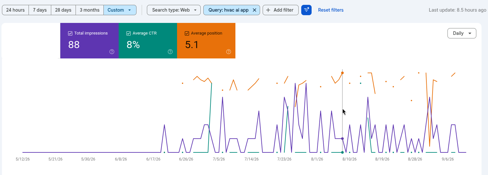
Named first in Google's AI Overview
For "hvac ai app," Google's AI Overview opens by defining HVAC/R AI Pro, cites hvacrai.com as a source, and lists the product first under "Top HVAC AI Apps and Tools," ahead of BuildOps and Bluon.
This matters more than a blue link. AI Overviews and AI-mode answers are where a growing share of this audience will look, and being the cited source rather than a competitor's mention is the difference between being the answer and being absent from it.
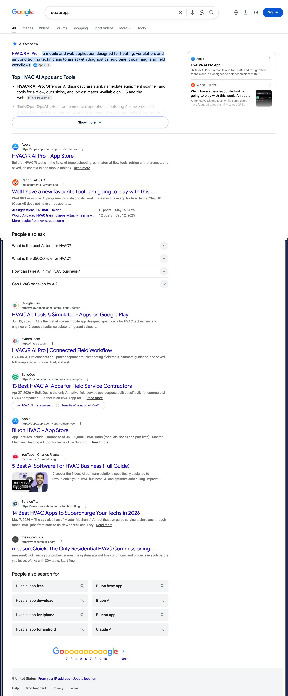
Cluster performance
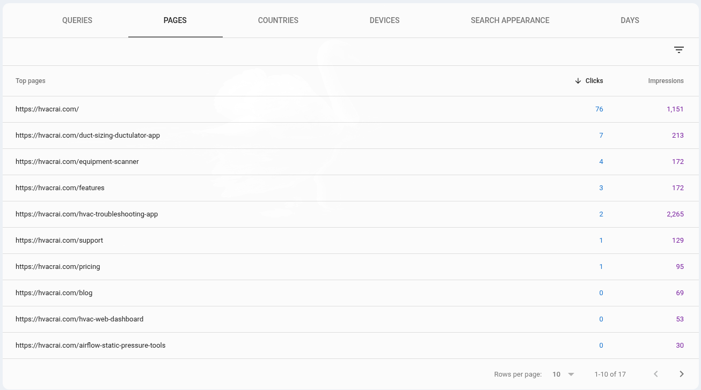
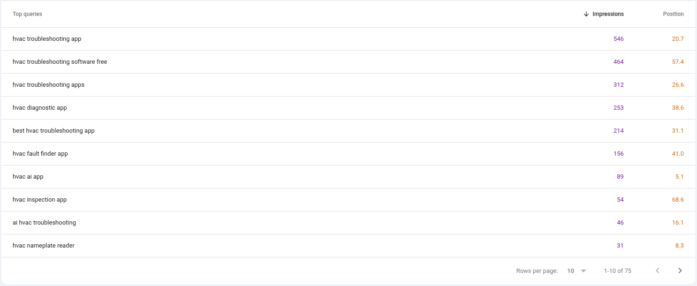
What the data told me next
Ranking a page is half the job. The more valuable output has been reading five months of search data and extracting what the site should do next. Four specific gaps:
An unserved comparison market.
Four shopping-intent queries (hvac troubleshooting apps, best hvac troubleshooting app, hvac diagnostic app, hvac fault finder app) generate 935 impressions with zero clicks. These are buyers at decision time and there is no page matching their intent. One rigorous comparison page targets all four.
An unanswered pricing question.
"hvac troubleshooting software free" pulls 464 impressions at average position 57. Second-highest impression query on the site, and the answer isn't visible anywhere a searcher can reach it.
A conversion problem, not a ranking problem.
The troubleshooting page has the most impressions on the site and the lowest click-through rate. That's a title and meta description issue, fixable without touching rankings.
AI search visibility is already working and can be extended.
The AI Overview result above is not an accident. It follows from pages structured around specific, answerable questions. The same approach applied to the comparison and pricing gaps should compound it.
The roadmap
- 1Capture the "hvac ai app" position through targeted metadata work
- 2Build the comparison page to serve 935 impressions of unmet buying intent
- 3Answer the free-tier question directly and visibly
- 4Rebuild the troubleshooting page with a real diagnostic walkthrough, product screenshots, competitor comparison, and an FAQ drawn from actual search data
- 5
SoftwareApplicationandFAQPagestructured data across commercial pages - 6Editorial placement in the industry roundups that currently surround the site in results
How these numbers were measured
Every figure comes from the client's Google Search Console property, exported September 13, 2026.
One note on attribution, because it matters. The troubleshooting page moved from position 21 to position 9 on September 8, 2026, before the optimization work in the roadmap above began. I built the page and the cluster that made that ranking possible. I did not cause that specific jump and I don't claim to. September 13 is the recorded baseline separating what came before from what follows.
I would rather give a client an accurate number than a flattering one. It's the same standard I apply to reporting on their campaigns.
Appendix A
Full SERP: "hvac troubleshooting app"
Complete page one, September 13, 2026, signed out, United States. The hvacrai.com result appears sixth organically.
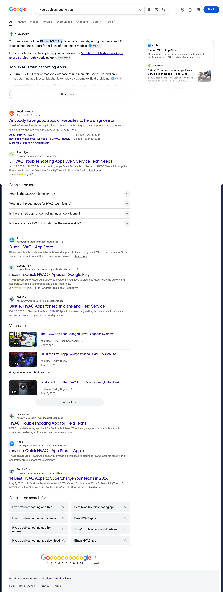
Appendix B
Full SERP: "hvac ai app"
Complete page one including the AI Overview, September 13, 2026, signed out, United States. HVAC/R AI Pro is named first under "Top HVAC AI Apps and Tools."